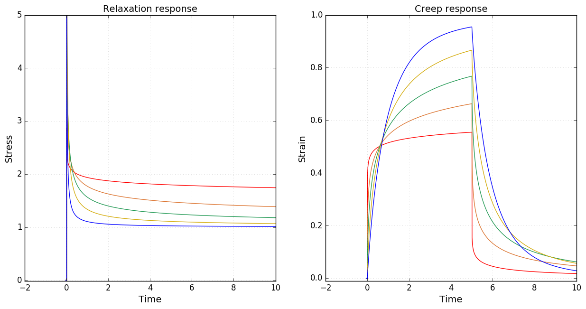
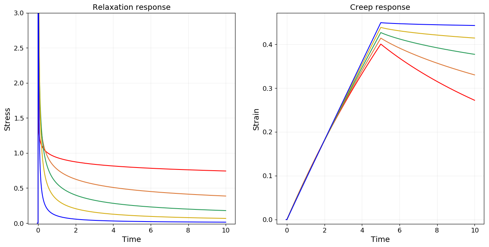
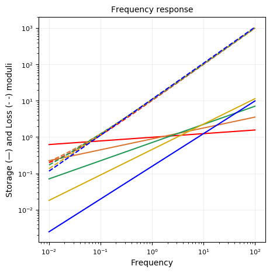
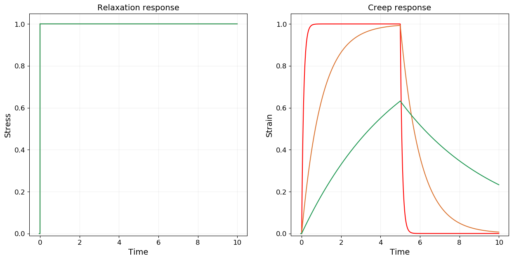

Fractional Kelvin-Voigt
using RHEOS
include("plotmodel.jl");Fract_KelvinVoigtModel name: fractKV
Free parameters: cₐ, a, cᵦ and β
________ ╱╲ ________
| ╲╱ cₐ, a |
____| |____
| |
|________ ╱╲ ________|
╲╱ cᵦ, βConstitutive equation
\[\sigma(t) = c_\alpha \frac{d^{\alpha} \epsilon(t)}{dt^{\alpha}}+ c_{\beta} \frac{d^\beta \epsilon(t)}{dt^\beta}\]
Assuming $0 \leq \beta \leq \alpha \leq 1$
Relaxation modulus
\[G(t) =\frac{c_{\alpha} }{\Gamma(1-\alpha)} t^{-\alpha}+\frac{c_{\beta} }{\Gamma(1-\beta)} t^{-\beta}\]
Creep modulus
\[J(t) = \frac{t^{\alpha}}{c_\alpha} E_{\alpha-\beta,1+\alpha}\left(-\frac{c_\beta}{c_\alpha} t^{\alpha-\beta}\right)\]
Storage modulus
\[G^{\prime}(\omega) = c_\alpha \omega^\alpha \cos\left(\alpha \frac{\pi}{2}\right) + c_\beta \omega^\beta \cos \left( \beta \frac{\pi}{2}\right)\]
Loss modulus
\[G^{\prime\prime}(\omega) = c_\alpha \omega^\alpha \sin\left(\alpha \frac{\pi}{2}\right) + c_\beta \omega^\beta \sin \left( \beta \frac{\pi}{2}\right)\]
Fractional (Spring) Kelvin-Voigt
FractS_KelvinVoigtModel name: fractSpringKV
Free parameters: cₐ, a and k
________ ╱╲ ________
| ╲╱ cₐ, a |
____| |____
| |
|____╱╲ ╱╲ ╱╲ ____|
╲╱ ╲╱ ╲╱
kmodels = Vector{RheoModel}()
# plot moduli for varying α
for alpha in [0.1, 0.3, 0.5, 0.7, 0.9]
push!(models,RheoModel(FractS_KelvinVoigt,(cₐ = 1.0, a = alpha, k = 1.0)))
end
plotmodel(models, ymaxG = 5.0);

Fractional (Dashpot) Kelvin-Voigt
FractD_KelvinVoigtModel name: fractDashpotKV
Free parameters: η, cᵦ and β
___
_________| |________
| _|_| η |
____| |____
| |
|________ ╱╲ ________|
╲╱ cᵦ, βmodels = Vector{RheoModel}()
# plot moduli for varying β
for beta in [0.1, 0.3, 0.5, 0.7, 0.9]
push!(models,RheoModel(FractD_KelvinVoigt,(η = 10, cᵦ= 1.0, β = beta)))
end
plotmodel(models, ymaxG = 3.0);


Kelvin-Voigt model
KelvinVoigtModel name: KV
Free parameters: η and k
___
_________| |________
| _|_| η |
____| |____
| |
|____╱╲ ╱╲ ╱╲ ____|
╲╱ ╲╱ ╲╱
kmodels = Vector{RheoModel}()
# plot moduli for varying k
for η in [0.1, 1.0, 5.0]
push!(models,RheoModel(KelvinVoigt,(η = η, k = 1)))
end
plotmodel(models);